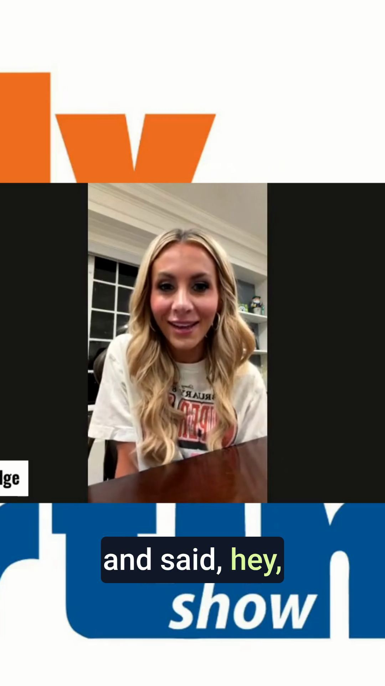

The Morning Cut
The Buddy Martin Show, Sept. 16, 2026, guest Laura Rutledge. YouTube 8b7F5iyYOIk. Descript project 4722f81b-757d-4169-b528-9479dc40ce4d. Built Sept. 30 from tool outputs only; see manifest.json for every ID.
Top clip: real vidIQ render

Laura Rutledge had to Google what an IFB was before her first live hit
Finding: the auto-crop keeps the Restream logo bed and a small guest window. Reframe before it runs. That is why it is Premium, not Standard.
The package
Laura Rutledge on the Gator Country reps that made her a broadcaster
A broken camera, not Sarkisian, delayed the halftime interview
Carlton Reese on '14 Days in Gainesville': a putter that never went back in the bag
Auburn is Florida's first real litmus test
Buddy on Ally Wilbur: 'Moms are the greatest multitaskers in the world'
Descript clip transcripts (exported Sept. 30)
LAURA RUTLEDGE CLIP, 00:00:38 "I have been pretty sick to my stomach by the way that people have commented about Holly, the things that people have said about Sarkisian, the things that people have said about Arch. I mean, there's just no reason for all that."
00:01:01 "Well, I was ready to go with Sarkisian, and a player we think had, in the stampede of getting into the locker room, had hit my camera that was over there. So my camera went out."
CARLTON REESE CLIP, 00:00:39 "I wrote a column for Buddy today. I remember I played golf with my mother, and then my aunt came up to Gainesville during that week, and I walked off the 18th green. My putter did not go in the bag. It stayed in my hand like it did the rest of the week. Everybody was walking around with baseball bats."
Thumbnail: Canva design DAHWqWoImOo
Generated with the GatorBait brand kit (kADrKmKAhUs), job 5bf4ff5f-9dfe-41a5-9914-7df44a2d7a61, exported as 1280x720 PNG (export job 7c80d5bd-ccd0-4379-8610-2ee269203962, success). Headline "I HAD TO GOOGLE IFB / Laura Rutledge on her first live TV hit".
Open the design in Canva (private to the account). The PNG could not be copied into this folder: the container proxy refuses export-download.canva.com and design.canva.ai.
Posting windows (Metricool, brand 6946016, Sept. 2026, ET)
| Network | Top hours | Show-night note |
|---|---|---|
| Wed noon, Wed 10 a.m., Mon 10 a.m., Tue 10 a.m. | 9 p.m. is about 40 percent of the midday peak; post clips the next morning | |
| YouTube | Wed, Thu, Fri, Tue at 4 p.m. | Shorts the afternoon after the show |
| TikTok | Thu 10 a.m., Wed 10 a.m., Wed 6 p.m., Thu 6 p.m. | 10 a.m. or 6 p.m. |
| no data (all zeros) | no account connected | |
| X | 403 AuthorizationException | permissions |
getBrandSettings says no network is connected to this brand, so these are Metricool's network benchmarks, not GatorBait audience numbers. Scheduled posts Sept. 23-Oct. 14: none.
Refusals recorded
vidIQ balance 0 of 150 (renews Oct. 13). Refused, no credits charged: channel_search, youtube_search, generate_clips on 8b7F5iyYOIk 320-560 s (36 credits), generate_music brass Tunnel sting (25). vidiq_user_channels: no channel authorized. Metricool twitter: 403. Restream MCP: proxy 403. Canva CDN: proxy 403.